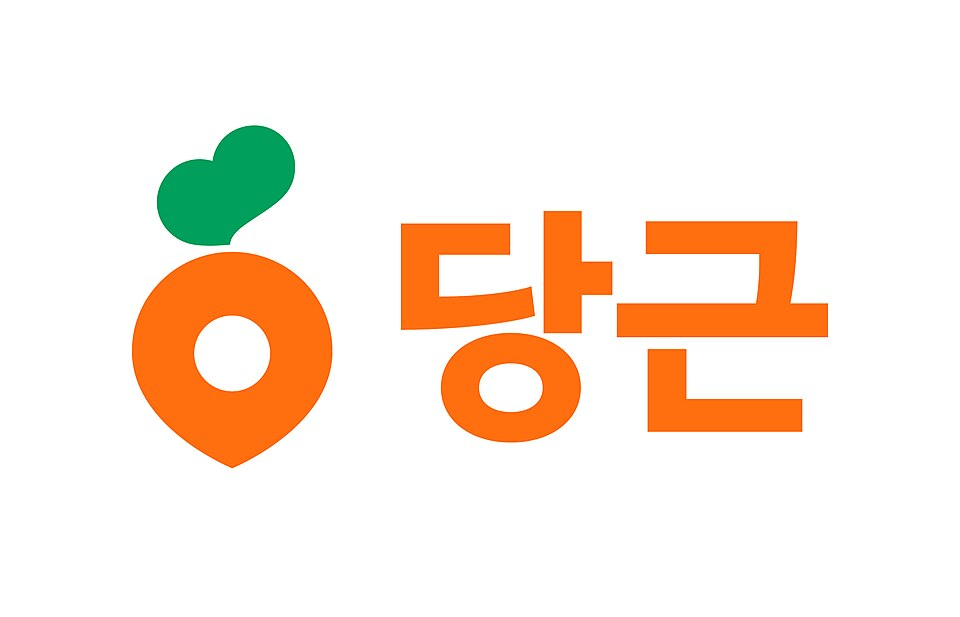

A 미니멀 워드마크
글자만으로 승부. 간격·굵기·글자 모양을 아주 정교하게 다듬은 형태. 오래가고 어디에나 맞음.
 Stripe
Stripe Samsung
Samsung Sony
Sony Google
GoogleB 심볼+워드마크
단순한 기하 심볼 + 깔끔한 글자. 아이콘이 따로 살아서 앱·파비콘에 강함.
 Mastercard
Mastercard Airbnb
Airbnb Spotify
Spotify Slack
SlackC 클래식·세리프
세리프(삐침 있는 글자)로 신뢰·전통·고급감. 금융·언론·명품 쪽.
 Tiffany & Co.
Tiffany & Co. Burberry
Burberry The New York Times
The New York Times Vogue
VogueD 모노그램·엠블럼
이니셜을 겹치거나 원 안에 넣은 마크. 상징성은 강하지만 명품·자동차 느낌.
 Chanel
Chanel Louis Vuitton
Louis Vuitton Volkswagen
Volkswagen YSL
YSLE 국내 IT
한국 사용자에게 친숙한 둥글고 친근한 톤.
 카카오
카카오
당근F 개발·IT 서비스
개발자·IT 서비스가 많이 쓰는 방식. 아주 단순한 심볼 + 단정한 글자, 흑백 위주.
 Vercel
Vercel Notion
Notion GitHub
GitHub